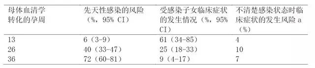
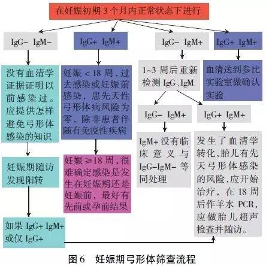
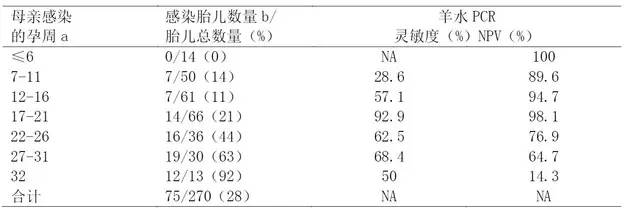
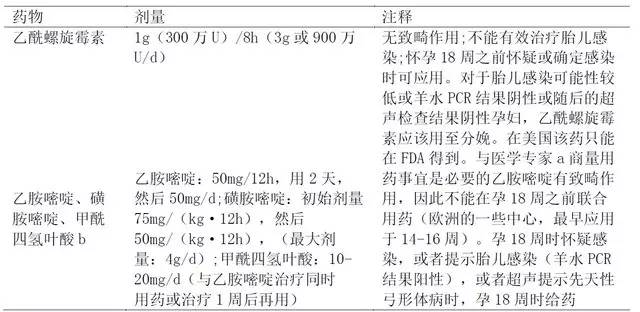
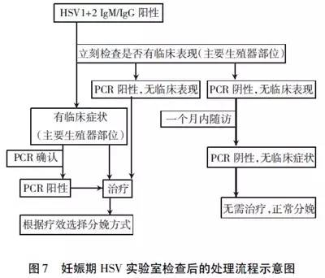

|
|
|


|
|
|||||||||||||
|
|||||||||||||
|
妊娠期TORCH筛查指南，TORCH问答（二）（27～52问）
发布时间：2019-4-2 11:16:35
问题27：为什么孕妇要进行弓形体感染筛查?
1.在妊娠期间弓形体的急性感染可严重影响胎儿和新生儿健康。如果摄取了污染的没有煮熟的肉类或食用了污染的食物和水，可导致弓形体急性感染的发生。
2.胎儿感染弓形体几乎都是通过孕妇的原发感染所致，可导致胎儿视觉和听觉丧失，智力和精神运动能力发育阻滞，癫痫发作，血液系统异常，肝脾肿大，甚至死亡。
3.弓形体传染给胎儿常发生于孕妇在妊娠期间无任何病史、未吃过未煮熟的肉食、未接触过猫的情况。因此，确定是否对孕妇进行血清学检测不能仅依靠临床（如出现或未出现症状）或流行病学情况（如是否与弓形体有接触）。
对孕妇进行系统的教育和血清学检查，是预防感染及诊断和早期治疗胎儿感染行之有效的方法，原因为弓形体感染通常是隐匿的。实践证实对胎儿和1岁以内婴儿的治疗，对于改善临床症状最有效。所有的孕妇应尽早（妊娠前3个月最为理想）进行弓形体的IgG和IgM抗体血清学检查。
问题28：胎儿感染弓形体是孕妇初次感染还是复发感染造成的?
发生胎儿感染主要是因为孕妇在怀妊娠期间初次感染了弓形体。少数情况下是因为孕妇有慢性感染，由于自身免疫缺陷（如艾滋病患者或应用皮质激素治疗的患者）的原因，出现弓形体激活，造成先天性感染。
问题29：胎儿和新生儿感染与母体感染有何关系?
随着孕周的增加，垂直传播的可能性也增加，见表5.孕早期感染的孕妇，其感染的新生儿的临床症状更加严重，见表5.

问题30：哪些孕妇是弓形体感染高风险群体?怎样确定?
孕前和妊娠期检测弓形体IgG阴性或IgM阴性，显示该妇女还没有被弓形体感染为发生妊娠期初次感染的高风险群体，在怀妊娠期间有获得初次感染和传染给胎儿的危险。因此，支持对高风险妇女在怀妊娠期间进行IgG和IgM抗体血清学检查。对于血清学检查阴性的妇女，最好在孕早期每个月检查一次，以后每3个月检查一次。确定高风险的筛查应在妊娠早期，越早越好，对临床提供的帮助就越大。在孕中期得到的检测结果经常不能确定在孕早期是否有感染。
问题31：妊娠期弓形体感染筛查处理流程及临床解释?
1.关于弓形体的处置，在妊娠期间可向专家咨询。
2.考虑将样品送到参比实验室。
3.用乙酰螺旋霉素或乙胺嘧啶、磺胺嘧啶、甲酰四氢叶酸进行治疗。
4.羊水PCR检测应在孕18周（不能提前）或18周之后。当孕周＞18周时，应慎重权衡检测风险和对胎儿感染诊断的好处。
5.妊娠期弓形体感染筛查和处理流程见图6，临床解释见表6.在美国可使IgM阳性孕妇减少50%的不必要流产。 
表6临床（非参比）实验室弓形体血清学试验结果的解释
注：*示在怀孕的末3个月出现这种情况时不太好解释，尽管这种情况与妊娠前感染相符，但在一些患者中，这种结果可反映出是在妊娠早期感染，在相对短的一段时间内，通常伴随IgM抗体滴度的升高和检测下限的降低
问题32：不论是在妊娠前还是在妊娠中期，IgM抗体阳性都不能认为就是近期感染?
IgM抗体结果阳性不能认为就是近期感染。急性期感染的IgM抗体可存在1年以上，多数查出IgM抗体阳性的孕妇其感染发生于很久之前，已经超出了对胎儿有影响的时期。这些患者是慢性感染。Jose连续检测了100例其他实验室检测IgM抗体阳性而送到PAMF-TSL参比实验室的血清样品，PAMF-TSL参比实验室的确证实验证实62%的这些血清样品IgM抗体是阴性的。附加实验证实这些感染是远期感染而不是近期感染。IgM抗体阳性的检测结果最大的价值在于它强调了近期感染的可能性，因此需要在参比实验室进一步确证。
问题33：参比实验室弓形体抗体检测结果的最终解释有几种可能性?
参比实验室血清学试验结果的最终解释有3种可能性：
1.试验结果符合近期感染，提示该患者怀孕后获得感染，但也不能排除即将受孕时感染。
2.试验结果符合受孕前的远期感染。
3.试验结果不确定，需要进一步血清学试验平行检测。
问题34：弓形体IgG亲和力试验有何临床意义?
弓形体IgG亲和力实验一般在参比实验室应用。感染后高亲和力的IgG抗体至少在孕12-16周才出现（具体时间依赖应用的实验方法）。出现高亲和力抗体提示感染至少出现在16周以前。因此，妊娠第1个月的孕妇，不管IgM抗体试验的结果，高亲和力的IgG试验结果提示胎儿基本上不会感染先天性弓形体。对于妊娠＞16周的孕妇，高亲和力实验结果对于确定感染至少在妊娠早期12-16周之前是非常有用的，在这种情况下，与妊娠晚期感染相比，弓形体传染给胎儿的比例是很低的，但对胎儿的致命损伤的可能性是很大，见表5，羊水PCR的阴性预测值会很高，见表7。 
表7母亲感染的孕周与胎儿感染和羊水PCR的关系
注：不管怀孕几周，阳性预测值都为100%，数据来自文献。NA：不可应用。a：通过血清转化法检测270例孕妇，以确定母源感染，其中261例（97%）应用乙酰螺旋霉素治疗。b：1年之后，通过弓形体IgG抗体的存在来诊断先天性感染
需特别注意的是初次感染之后，低亲和力或不确定的试验结果可能存在几个月或者1年多，由于这个原因，不能单独使用弓形体IgG亲和力实验来确定是否是近期感染。实际上，如果血清样品中，具有低亲和力或者临界值亲和力抗体，IgM抗体试验结果阴性，提示远期感染。如果单独使用，IgG亲和力试验是没有用的，甚至可能造成误导。
问题35：妊娠期怀疑弓形体初次感染，怎样进行胎儿感染诊断?
孕18周（最适时间）或稍晚阶段的羊水弓形体DNA的PCR扩增已被成功应用于先天性弓形体病的产前诊断。在妊娠早期进行羊水检查对胎儿有较高风险，而且也无必要。数据显示，在孕17-21周检测具有最高的灵敏度和最好的阴性预测值（不管怀孕几周，阳性预测值都为100%）。
超声主要应用于孕妇被怀疑或诊断为孕前短时间（3个月）内急性感染。超声能显示胎儿畸形，包括脑水肿，大脑或肝脏钙化，脾大和腹水等。
问题36：乙酰螺旋霉素治疗妊娠期弓形体感染何时开始?
一旦怀疑有急性感染，而感染发生在孕18周之内或怀孕前短时间内，要阻止寄生虫的垂直传播，美国和欧洲的一些学者认为乙酰螺旋霉素是首选药物。
问题37：何时联合使用乙胺嘧啶、磺胺嘧啶、甲酰四氢叶酸治疗弓形体感染?
如果羊水PCR的阳性结果证实胎儿感染，在孕18周或在此之后，推荐使用乙胺嘧啶，磺胺嘧啶，甲酰四氢叶酸等（如果患者已经应用了乙酰螺旋霉素，则推荐改为联合用药）。乙胺嘧啶有致畸作用，因此不能在孕18周之前联合用药（在欧洲的一些中心，联合用药可以早到孕14-16周）。由于孕18周以后垂直传播的比例很高，如果孕18周以后感染弓形体，也推荐使用乙胺嘧啶、磺胺嘧啶、甲酰四氢叶酸，以阻止胎儿感染的发生。
如果垂直传播已经发生，则准备对胎儿进行治疗。这时乙胺嘧啶不能早期应用，因为该药有潜在的致畸作用。乙酰螺旋霉素这种大环内酯类抗生素能降低垂直传播的概率。然而，还没有进行设计周密的研究。已经报道这种保护对于孕早期感染比较有效。该研究参照历史对照，先天性感染的概率被降低了60%左右。乙酰螺旋霉素不能迅速地通过胎盘，因此对胎儿感染的治疗效果不会很好。没有证据显示乙酰螺旋霉素有致畸作用，见表8.
因为在理论上，孕妇孕早期的感染可以在孕晚期传染给胎儿，因此，即使羊水PCR结果为阴性，乙酰螺旋霉素也应该一直用到分娩。对胎儿有很高感染风险的孕妇，或者胎儿的感染已得到证实，孕18周以后单纯应用乙酰螺旋霉素治疗的方案应转变为乙胺嘧啶、磺胺嘧啶、甲酰四氢叶酸联合用药。用药必须在医学专家指导下应用。 
表8妊娠期间被怀疑或被确定弓形体感染的孕妇的用药
注：FDA：美国食品药品监督管理局。
a：PaloAltoMedicalFoundationToxoplasmaSerologyLaboratory，telephonenumber（650）853～4828，orUS（Chicago，IL）NationalCollaborativeTreatmentTrialStudy，telephonenumber（773）834～4152.
b：叶酸不能作为甲酰四氢叶酸替代品
问题38：孕前感染过弓形体（IgG抗体阳性）还需做产前诊断和抗弓形体治疗吗?
孕前明确感染弓形体或血清学检测显示很久之前（孕前）感染过弓形体，孩子患先天性弓形体病的概率很小（接近于0），因此应用乙酰螺旋霉素或乙胺嘧啶、磺胺嘧啶、甲酰四氢叶酸治疗，以及进行胎儿是否感染的产前诊断都是没有必要的，除非母亲免疫功能有缺陷。
问题39：每个疑似弓形体感染病例（育龄妇女、孕妇及基层医生）与专家咨询讨论可获得哪些信息?
1.弓形体检测方法的选择。
2.检测结果的正确解释。
3.对孕妇和胎儿进行产前诊断。
4.给出个体化的治疗方案。
问题40：具有免疫缺陷的患者孕前感染过弓形体怎样处置?
合并感染HIV和弓形体的孕妇有弓形体再激活和发展为弓形体病，如弓形体脑炎、肺炎等和（或）将寄生虫传递给后代的风险。
HIV感染的孕妇不适于进行羊水PCR的检测，因为在羊水穿刺的过程中有可能将HIV传递给胎儿。非HIV感染有免疫缺陷的弓形体慢性感染（也可以是妊娠期间感染）的孕妇可考虑行羊水PCR检测。对于所有的弓形体慢性感染又有免疫缺陷的孕妇，每个月都要做一次超声检查。
问题41：近期感染了弓形体，什么时间怀孕安全?
育龄妇女明确感染弓形体之后，考虑到有传递给后代的风险，经常会问她们什么时间怀孕安全。关于这个问题目前还没有确切的资料。保守的建议是这样的妇女等6个月（从急性感染被确诊或记录开始算起）以后再怀孕。每个患者最好都要进行专家咨询。
五、单纯疱疹病毒（HSV）筛查
问题42：妊娠前和妊娠期单纯疱疹病毒（HSV）筛查的目的是什么?
妊娠期HSV血清学筛查可以明确孕妇是否感染病毒。而妊娠前和妊娠期HSV对比筛查是为了确定初次感染还是复发感染，以便提供治疗和干预的依据，目的是预防新生儿感染。妊娠期实验室检查后的处理流程，见图7.

问题43：妊娠期HSV感染特点?
1.一经感染终身携带，病毒潜伏在神经节，是一种嗜神经疱疹病毒。
2.孕早、中期发生初次感染造成胎儿感染的概率极低，孕早期筛查意义不大。HSV经血－胎盘导致胎儿畸形罕见，表现为头小畸形症，肝脾肿大，胎死宫内（IUFD），胎儿宫内发育迟缓（IUGR）。
3.HSV感染主要是通过产道感染新生儿。
4.妊娠期HSV感染主要是初次感染。先前IgG阳性对新生儿感染HSV保护作用很弱。
5.新生儿感染率：孕妇初次感染＞复发感染。
6.婴儿在娩出过程中感染HSV，其中60%-80%之前并无生殖器疱疹感染史或性伴无生殖器疱疹史。
7.70%的母亲直到发现新生儿被感染后才知道自己被感染了。
8.无论HSV-1还是HSV-2型都可导致生殖器疱疹感染（高达50%的生殖器疱疹初次感染是由HSV-1造成的，但是复发和亚临床感染的病毒脱落主要是HSV-2导致的）。妊娠晚期无论初次感染了HSV-1还是HSV-2，对新生儿的感染风险都是30%～50%。
问题44：新生儿HSV感染?先天性HSV?
新生儿HSV感染是指在临近分娩或分娩时，新生儿通过接触产妇生殖道病毒获得感染。在极少数情况下，也可能发生医源性感染或者产后经过婴儿口腔或破损的皮肤感染病毒，HSV感染明确诊断需要在分娩结束48小时以后，这对于鉴别新生儿与先天性HSV感染十分重要。先天性HSV感染罕见，在宫内HSV通过胎盘感染胎儿。
问题45：生殖器疱疹感染分几种?
初次感染，患者首次暴露于HSV-1型或者HSV-2型病毒，之前未接触过任意一种或两种病毒，没有免疫性（无HSV-1或HSV-2抗体）。
非初次感染首次发作，患者首次临床确诊HSV感染发作，但在之前患者感染HSV-1或者HSV-2型病毒过程中体内已产生相应抗体。
症状复发，指有明显的临床表现，确诊患者感染HSV病毒并产生抗体，之后再次发作。
问题46：HSV血清学检测应注意哪些问题?
进行血清学检测应注意如下问题：
1.建议对所有怀疑有HSV感染的孕妇使用直接检测病毒的方法（I-A）。但是，对有复发感染史或非典型生殖道疾病史者直接检测病毒方法结果可以为阴性（Ⅲ，B）。
2.HSV-2抗体可诊断生殖器疱疹;HSV-1抗体不能区分是生殖道还是口咽感染。
3.HSV-2型IgG阴性，HSV-1型IgG阳性，应考虑是一种不常见的复发性生殖道感染。
4.首发生殖器疱疹，应区分初次感染和既往感染（Ⅲ，B）。症状出现时，由于还没有产生针对该病毒的HSV的IgG（与生殖器病变检测到的类型是一致的），应在随访时找到原发性感染的血清转换的证据。
5.初次感染型特异性HSV抗体可在症状出现2周-3个月后检测到。凡有临床症状，应随访取样测定证实血清学转换（IIa-B）。
6.由于早期感染患者缺乏IgG抗体，所以检测单纯疱疹病毒IgM抗体能提高早期感染检出率（Ⅱb-B）。但是由于HSVIgM在复发感染时可以出现阳性，在初次感染时可能出现阴性，它是非病毒型特异抗体。
7.目前尚无FDA认可的HSVIgM分型试剂盒，而用于鉴别急性HSV感染的真正可信的分型检测方法应为PCR技术的分子生物学方法。
问题47：妊娠晚期发生HSV原发感染如何处置?
在妊娠晚期，孕妇原发感染HSV，对新生儿的影响最为严重。在这种情况下，由于产妇不能在分娩前产生足够的IgG抗体，婴儿缺乏来自母体IgG的被动免疫保护。此时，有30%～50%的新生儿会感染HSV。
问题48：孕妇分娩期间复发HSV感染如何处置?
当分娩期间发现HSV复发感染，有前驱症状或病变，医师应推荐产妇选择剖宫产，即使病变的位置远离外阴（比如臀部或大腿），因为宫颈和阴道均可能排泌病毒。理想的状态下，为了预防感染，剖宫产应在破膜4小时内进行。如果分娩已经发动，选择剖宫产很可能对降低感染率没有任何帮助。另外一种情况下，在阴道HSV复制活跃合并胎膜破裂延迟时，剖宫产的保护作用也未被证实。
问题49：妊娠期HSV血清学分型有临床意义吗?
无论HSV-1还是HSV-2型都可产生生殖器部位的疱疹，都可造成新生儿感染。目前临床治疗策略上不会因为分型而有所不同，也不会因HSV感染的部位不同或根据组织器官不同而做相应的治疗改变，而且就生殖器部位的疱疹，HSV-1型所占比例也很高，可达1/3。所以分型检测不是必需的，当然分型检测可提供一定的参考信息，但应采用PCR技术的分型，才最为可靠。
问题50：妊娠期复发的HSV感染如何处置?
当妊娠时间＜36周孕妇发生HSV复发感染，即使临床症状严重也不应使用抗病毒治疗。而临床症状十分严重，抗病毒治疗无法避免时，治疗也应考虑个体化方案。当妊娠时间＞36周后使用抗病毒治疗可以降低其传染性，缓解临床症状，降低剖宫产率。在缺乏大量临床安全研究数据的情况下，怀孕妇女只有出现抗病毒治疗指征时，才可使用阿昔洛韦和伐昔洛韦。
问题51：妇女无HSV感染病史也要进行血清学检查吗?
婴儿在娩出过程中感染HSV，其中60%-80%之前并无HSV感染史或性伴侣无生殖器疱疹史。70%的母亲直到发现新生儿被感染后才知道被感染了。
问题52：妊娠期首发生殖器疱疹产后新生儿怎样处置?
妊娠期首发生殖器疱疹的孕妇产后新生儿应该按如下方法处置：
1.首先应该通知儿科医生。
2.为了早期发现新生儿感染应该做尿、便、口咽、眼和皮肤的HSV培养。
3.在培养结果未出来时，应权衡利弊，研究是否启动阿昔洛韦治疗。
4.如果不立即启动阿昔洛韦治疗，应密切监测新生儿有无嗜睡、发热、拒食或病变的迹象。
问题53：妊娠期复发生殖器疱疹产后新生儿怎样处置?
虽然有些医师认为，妊娠期复发生殖器疱疹的孕妇产后应该取一组标本进行病毒培养，有助于早期发现新生儿感染，但没有任何证据支持这一做法。然而，应建议医生和家长如果婴儿有皮肤、眼睛或黏膜的任何病变，特别是在出生2周内，应考虑HSV感染的鉴别诊断。
来源：中华检验医学网 |
|